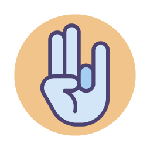

Michelle Regina da Silva
SOBRE
33 anos, Desenvolvedora Front-End, formada atualmente pela {Reprograma}, esta a procura de uma oportunidade no mercado de trabalho de tecnologia, para colocar seus conhecimentos e habilidades em ação.
Antes de iniciar seus estudos na Reprograma, Michelle se formou em Analise e Desenvolvimento de Sistemas. Trabalhou 6 anos com suporte técnico, onde aprendeu muito sobre ERP’s, regras de negócio, além de como é satisfatório trabalhar em equipe, ajudando os demais, agregando conhecimento aos outros e a si mesma..
Ama ler e estudar, atualmente continua seus estudos focado em desenvolvimento Front-End em um curso on-line.
Apaixonada por animais e vegetariana, seu hobbie é viajar para praia e se encantar com um belo por do sol. Sua paixão é sua família (mãe e irmã) no qual ela reside hoje , na região Leste de São Paulo e o Chocolate, seu cachorro . Chocolate é um cachorro da raça shit-zu , de 3 anos de idade, pequeno e travesso.
Michelle está disponível para atuar em novos projetos e aprendizado. Você pode chegar atá a Michelle através dos contatos dela no final desta página .
Meus Hobbies
O que gosto de fazer
-

Ler
-

Cuidar de animais
-

Dançar
-

Meditar
-

Novas tatuagens